Zigbee
总览
本示例主要介绍如何使用zigbee。
使用步骤
进入
customer_app/bl702_demo_event工程并通过genzb脚本命令编译，完成后下载Bin文件；- Device1 使用
zb_register_dev 1 0x0104 0x0007 0x00 0x07 0x0000 0x0003 0x0004 0x0005 0x0006 0x0008 0x0300命令注册 endpoint 1, profile id 为0x0104, device id为0x0007, input cluster 0个, output cluster 7个
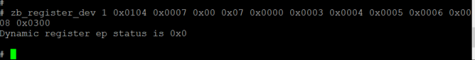- Device1 使用
- Device1 使用
zb_set_role 0命令设置设备类型ZC; 使用zb_form 15 0xaaaa创建信道15，PANID 0xaaaa的ZHA网络 ,打印的部分log如下。
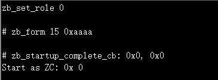- Device1 使用
- Device1 使用
zb_nwk_permit_join 120开放网络120秒；
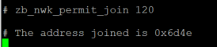- Device1 使用
- Device2 使用
zb_register_dev 1 0x0104 0x0102 0x07 0x0000 0x0003 0x0004 0x0005 0x0006 0x0008 0x0300 0x00命令注册 endpoint 1, profile id 为0x0104, device id为0x0102, input cluster 7个, output cluster 0个; 如果Device2要做touchlink target，input cluster中需要注册touchlink cluster, touchlink cluster id 为0x1000，例如zb_register_dev 1 0x0104 0x0102 0x08 0x0000 0x0003 0x0004 0x0005 0x0006 0x0008 0x0300 0x1000 0x00。
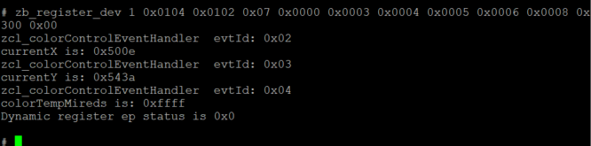- Device2 使用
- Device2 使用
zb_set_role 1命令设置设备类型ZR， 使用zb_start自动搜索zigbee网络，找到网络后打印的部分log如下。

- Device2 使用
- Device1 使用
zb_zcl_onoff 2 0x6d4e 1 1 2命令向Device2 ep1 发送zcl:toggle 命令,地址模式为短地址
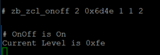- Device1 使用
- Device1/2 使用
zb_reset, 擦除zigbee flash存储内容。
- Device1/2 使用
- Device1/2 使用
zb_reboot, 重启程序。
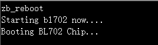- Device1/2 使用
Cli命令介绍
zb_register_dev
- 功能：注册设备信息
- 参数：
- 参数1：<uint8_t>类型，设备的endpoint
- 参数2：<uint16_t>类型，设备的profile ID
- 参数3：<uint16_t>类型，设备的device id/type
- 参数4：<uint8_t>类型，设备的Input cluster 数量
- 参数5：<uint16_t>类型，设备的Input clusterID列表，该参数的个数要和总Input cluster 数量保持一致
- 参数6：<uint8_t>类型，设备的Output cluster 数量
- 参数7：<uint16_t>类型，设备的Output clusterID列表，该参数的个数要和Output cluster 数量保持一致
- 示例：
"zb_register_dev <ep_num> <profile_id> <device_id> <inputClsNum> <inputCls1><inputClsN...> <outputClsNum> <outputCls1> <outputClsN...>\r\n"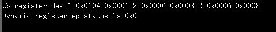
zb_set_role
- 功能：设置设备类型为协调器，路由器或是终端设备
- 参数：
- 参数1：<uint8_t>类型，设备类型标识，0(ZC)|1(ZR)|2(ZNSED none sleepy end device)
示例：
"zb_set_role <nDeviceRole>\r\n"
zb_change_role
- 功能：更改已在网设备的设备类型, 主要用于ZR和ZNSED设备之间的转换
- 参数：
- 参数1：<uint8_t>类型，设备类型标识，1(ZR)|2(ZNSED)
示例：
"zb_change_role <nDeviceRole>\r\n"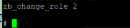
zb_set_channel
- 功能：设置Zigbee的网络信道
- 参数：
- 参数1：< uint8_t >类型，待设置的Zigbee网络信道，范围11-26
示例：
"zb_set_channel <channel>\r\n"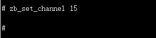
zb_form
- 功能：设置Zigbee协调器或路由器组网时使用的信道Channel和网络标识PANID
- 参数：
- 参数1：<uint8_t>类型，Channel标号，范围 11-26
- 参数2：<uint16_t>类型，网络PANID
示例：
"zb_form <channel> <PANID>\r\n"
zb_nwk_permit_join
- 功能：开放网络(允许设备加入网络)
- 参数：
- 参数1：<uint8_t>类型，开放网络的时间长度。0：关闭网络，255：永远开放网络，1-254：开放网络的秒数
示例：
"zb_nwk_permit_join <duration>\r\n"
zb_start
功能：启动zigbee网络功能，ZC 调用该命令前，需配置Channel和PANID
参数：无
示例：
"zb_start\r\n"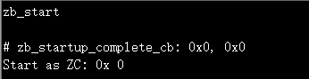
zb_reset
功能：复位Zigbee设备到出厂设置（网络信息等均复位）
参数：无
示例：
"zb_reset\r\n"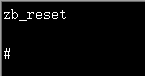
zb_reboot
功能：重启Zigbee设备
参数：无
示例：
"zb_reboot\r\n"
zb_get_mac
功能：获取设备的MAC地址, 地址显示小端模式，例如图中MAC地址为 0xb4e8420008640000
参数：无
示例：
"zb_get_mac\r\n"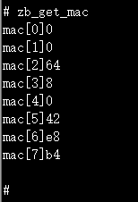
zb_set_tx_power
- 功能：设置设备的发射功率
- 参数：
- 参数1：<uint8_t>类型，可选值为 0-14
示例：
"zb_set_tx_power <power>\r\n"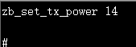
zb_zdp_node_desc_req
- 功能：请求远端设备的节点描述
- 参数：
- 参数1：<uint16_t>类型，远端设备的短地址
- 参数2：<uint16_t>类型，Node Descriptor请求的网络地址
示例：
"zb_zdp_node_desc_req <dst_addr> <nwk_addr>\r\n"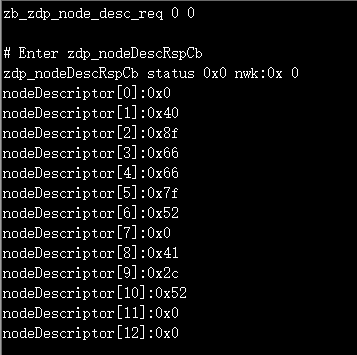
zb_zdp_nwk_addr_req
- 功能：请求远端设备的网络地址
- 参数：
- 参数1：< uint8_t*>类型，低字节在前。远端设备的IEEE地址, 显示为小端模式，例如图中地址为 0xb4e8420008640000
示例：
"zb_zdp_nwk_addr_req <ieeeAddr>\r\n"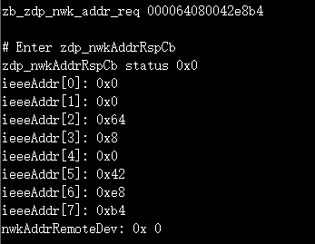
zb_zdp_ieee_addr_req
- 功能：请求远端设备的节点描述
- 参数：
- 参数1：<uint16_t>类型，远端设备的短地址
- 参数2：<uint16_t>类型，IEEE匹配的网络地址
示例：
"zb_zdp_ieee_addr_req <dst_addr> <nwk_addr>\r\n"
zb_zdp_power_desc_req
- 功能：请求远端设备的电源描述
- 参数：
- 参数1：<uint16_t>类型，远端设备的短地址
- 参数2：<uint16_t>类型，远端设备的Power Descriptor请求的网络地址
示例：
"zb_zdp_power_desc_req <dst_addr> <nwk_addr>\r\n"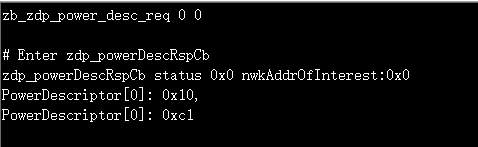
zb_zdp_simple_des_req
- 功能：请求远端设备上指定endpoint的简单描述
- 参数：
- 参数1：<uint16_t>类型，远端设备的短地址
- 参数2：<uint16_t>类型，远端Simple Descriptor请求的网络地址
- 参数3：<uint8_t>类型，远端设备的endpoint
示例：
"zb_zdp_simple_des_req <dst_addr> <nwk_addr> <dst_ep>\r\n"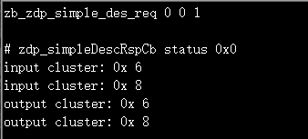
zb_zdp_active_ep_req
- 功能：用于请求远端设备上的端点列表，并带有相应的简单描述
- 参数：
- 参数1：<uint16_t>类型，远端设备的短地址
- 参数2：<uint16_t>类型，Active EndPoint请求的网络地址
示例：
"zb_zdp_active_ep_req <dst_addr> <nwk_addr>\r\n"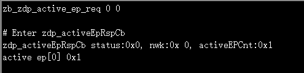
zb_zdp_bind
- 功能：用于请求为指定的源地址信息和目标地址信息创建绑定表条目
- 参数：
- 参数1：<uint16_t>类型，远端设备的短地址
- 参数2：<uint16_t>类型，与目标设备绑定的源设备上的 clusterID
- 参数3：<uint8_t>类型，待绑定的源endpoint
- 参数4：<uint8_t*>类型，待绑定的源设备的MAC地址（64-bit IEEE address, 0000ac080042e8b4 即 0xb4e8420008ac0000）
- 参数5：<uint8_t>类型，待绑定的目标endpoint
- 参数6：<uint8_t*>类型，待绑定的目标设备的MAC地址（64-bit IEEE address, 000064080042e8b4 即 0xb4e8420008640000）
示例：
"zb_zdp_bind <dst_addr> <clusterID> <src_ep> <src_mac> <dst_ep> <dst_mac>\r\n"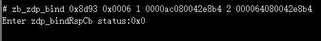
zb_zdp_unbind
- 功能：用于请求删除为指定的源地址信息和目标地址信息创建的绑定表条目
- 参数：
- 参数1：<uint16_t>类型，远端设备的短地址
- 参数2：<uint16_t>类型，与目标设备解除绑定的源设备上的 clusterID
- 参数3：<uint8_t>类型，待删除的endpoint
- 参数4：<uint8_t*>类型，待删除的源设备的MAC地址（64-bit IEEE address, 0000ac080042e8b4 即 0xb4e8420008ac0000）
- 参数5：<uint8_t>类型，待删除的目标endpoint
- 参数6：<uint8_t*>类型，待删除的目标设备的MAC地址（64-bit IEEE address, 000064080042e8b4 即 0xb4e8420008640000）
示例：
"zb_zdp_unbind <dst_addr> <clusterID> <src_ep> <src_mac> <dst_ep> <dst_mac>\r\n"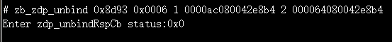
zb_zcl_set_dir
- 功能：设置ZCL Frame direction
- 参数：
- 参数1：<uint8_t>类型, 0x00(从Client到Server)， 0x01(从Server到Client)
- 示例：
"zb_zcl_set_dir <dir>\r\n"
zb_get_local_attr
- 功能：用于获取当前设备指定的cluster属性值
- 参数：
- 参数1：<uint8_t>类型，当前设备的endpoint
- 参数2：<uint8_t>类型，cluster属性是在server端(0)，还是client端(1)
- 参数3：<uint16_t>类型，当前设备的clusterID
- 参数4：<uint16_t>类型，标识要读取的属性标识符
示例：
"zb_get_local_attr <ep> <dir> <clusterId> <attrId>"
zb_set_local_attr
- 功能：用于设置当前设备指定的cluster属性值
- 参数：
- 参数1：<uint8_t>类型，当前设备的endpoint
- 参数2：<uint8_t>类型，cluster属性是在server端(0)，还是client端(1)
- 参数3：<uint16_t>类型，当前设备的clusterID
- 参数4：<uint16_t>类型，标识要写入的属性标识符
- 参数5：<uint8_t>类型，待写入属性的数据类型
- 参数6：<octstr>类型，待写入的属性数据，不包含数据长度
- 示例：
"zb_set_local_attr <ep> <dir> <clusterId> <attrId> <type> <octstr>"
"例如，设置identify time为15s: # zb_set_local_attr 1 0 0x0003 0x0000 0x21 0f00"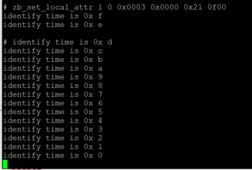
zb_zcl_read
- 功能：读取指定设备的一个或多个属性
- 参数：
- 参数1：<uint16_t>类型，待读取设备的短地址
- 参数2：<uint8_t>类型，当前设备的endpoint
- 参数3：<uint8_t>类型，目标设备的endpoint
- 参数4：<uint16_t>类型，目标设备的clusterID
- 参数5,6,7…：<uint16_t>类型，标识要读取的属性标识符
示例：
"zb_zcl_read <dst_addr> <src_ep> <dst_ep> <cluster> [attr1] [attr2] [...]\r\n"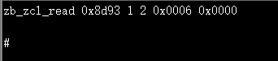
zb_zcl_write
- 功能：对指定设备写入一个或多个属性
- 参数：
- 参数1：<uint16_t>类型，目标设备的短地址
- 参数2：<uint8_t>类型，当前设备的endpoint
- 参数3：<uint8_t>类型，目标设备的endpoint
- 参数4：<uint16_t>类型，目标设备的clusterID
- 参数5：<uint16_t>类型，待写入的Attribute ID
- 参数6：<uint8_t>类型，待写入属性的数据类型
- 参数7：<octstr>类型，待写入的属性数据，不包含数据长度
- 示例：
"zb_zcl_write <dst_addr> <src_ep> <dst_ep> <cluster> <attr> <type> <octstr>\r\n"
"例如，把目标设备的identify time为设置为15s: # zb_zcl_write 0x8d93 1 1 0x0003 0x0000 0x21 0f00"
zb_zcl_cfg_report
- 功能：配置设备自动发送报告的机制
- 参数：
- 参数1：<uint16_t>类型，目标设备的短地址
- 参数2：<uint8_t>类型，当前设备的endpoint
- 参数3：<uint8_t>类型，目标设备的endpoint
- 参数4：<uint16_t>类型，目标设备的clusterID
- 参数5：<uint8_t>类型，配置报告方向，用于指定配置是作用于报告发送端还是接收端，0x00表示报告发送端，0x01表示报告接收端
- 参数6：<uint16_t>类型，目标设备的Attribute ID
- 参数7：<uint8_t>类型，目标设备属性的数据类型，当报告方向为0x00时需要配置该参数
- 参数8：<uint16_t>类型，待设置的最小报告间隔，单位为“秒， 当报告方向为0x00时需要配置该参数”
- 参数9：<uint16_t>类型，待设置的最大报告间隔，单位为“秒， 当报告方向为0x00时需要配置该参数”
- 参数10：<uint8_t []>类型，待设置的导致Report的最小更改， 当报告方向为0x00时需要配置该参数
- 参数11：<uint16_t>类型，接收端的报告超时时间，单位为“秒”， 当报告方向为0x01时需要配置该参数
- 示例：
"配置报告发送端：zb_zcl_cfg_report <dst16> <src_ep> <dst_ep> <cluster> <direction> <attr> <type> <min> <max> <reportChange>""例如，希望配置Level Control Cluster中的CurrentLevel属性, 最小报告间隔为30s, 最大报告间隔为300s, 产生报告的最小更改为30， 配置命令为：zb_zcl_cfg_report 0xac89 1 1 0x0008 0 0x0000 0x20 0x001E 0x0x012C 1E""配置报告接收端：zb_zcl_cfg_report <dst16> <src_ep> <dst_ep> <cluster> <direction> <timeout>""例如，对于Level Control Cluster中的CurrentLevel属性, 要配置接收端报告超时时间为600s， 则配置命令为：zb_zcl_cfg_report 0xac89 1 1 0x0008 1 0x0000 0x0258"
zb_zcl_read_report_cfg
- 功能：用于读取指定cluster属性的报告机制配置细节
- 参数：
- 参数1：<uint16_t>类型，目标设备的短地址
- 参数2：<uint8_t>类型，当前设备的endpoint
- 参数3：<uint8_t>类型，目标设备的endpoint
- 参数4：<uint16_t>类型，目标设备的clusterID
- 参数5：<uint8_t>类型，配置的direction，即读取发送端还是接收端的配置，0x00表示报告发送端，0x01表示报告接收端
- 参数6：<uint16_t>类型，属性发现的起始Attribute ID
- 示例：
"zb_zcl_read_report_cfg <dst_addr> <src_ep> <dst_ep> <cluster> <dir> <attr>""例如，读取Level Control Cluster中的CurrentLevel属性的报告配置细节： zb_zcl_read_report_cfg 0xac89 1 1 0x0008 0 0x0000"
zb_zcl_disc_attr
- 功能：用于发现指定cluster上的设备的属性标识符和属性类型
- 参数：
- 参数1：<uint16_t>类型，目标设备的短地址
- 参数2：<uint8_t>类型，当前设备的endpoint
- 参数3：<uint8_t>类型，目标设备的endpoint
- 参数4：<uint16_t>类型，目标设备的clusterID
- 参数5：<uint16_t>类型，属性发现的起始Attribute ID
- 参数6：<uint8_t>类型，指定Response中Attribute ID数最大值
- 示例：
"zb_zcl_disc_attr <dst_addr> <src_ep> <dst_ep> <cls_id><start_attr_id> <attr num to read>\r\n"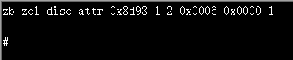
zb_zcl_identify
- 功能：发送识别命令以查找或停止查找指定设备
- 参数：
- 参数1：<uint16_t>类型，目标设备的短地址
- 参数2：<uint8_t>类型，当前设备的endpoint
- 参数3：<uint8_t>类型，目标设备的endpoint
- 参数4：<uint16_t>类型，识别时间的长度，单位为“秒”
示例：
"zb_zcl_identify <dst_addr> <src_ep> <dst_ep> <identify_time>\r\n"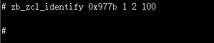
zb_zcl_identify_query
- 功能：该命令用于请求指定的设备返回当前的identify_time
- 参数：
- 参数1：<uint16_t>类型，目标设备的短地址
- 参数2：<uint8_t>类型，当前设备的endpoint
- 参数3：<uint8_t>类型，目标设备的endpoint
示例：
"zb_zcl_identify_query <dst_addr> <src_ep> <dst_ep>\r\n"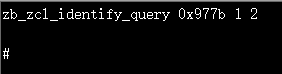
zb_zcl_group_add
- 功能：通知目标设备上的某个endpoint去添加指定的组成员到特定的组中
- 参数：
- 参数1：<uint8_t>类型，源设备endpoint
- 参数2：<uint8_t>类型，目标设备endpoint
- 参数3：<uint16_t>类型，目标设备的短地址
- 参数4：<uint16_t>类型，待添加的groupID
- 参数5：<string>类型，0-16个字符，待添加的组名
示例：
"zb_zcl_group_add <src_ep> <dst_ep> <dst_addr> <groupid> <grp_name>\r\n"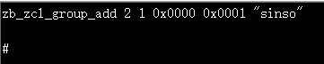
zb_zcl_group_remove
- 功能：通知目标设备上的某个endpoint去移除指定的组成员
- 参数：
- 参数1：<uint8_t>类型，源设备endpoint
- 参数2：<uint8_t>类型，目标设备endpoint
- 参数3：<uint16_t>类型，目标设备的短地址
- 参数4：<uint16_t>类型，待移除的groupID
示例：
"zb_zcl_group_remove <src_ep> <dst_ep> <dst_addr> <groupid>\r\n"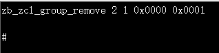
zb_zcl_group_removeAll
- 功能：通知目标设备上的某个endpoint去移除所有的组成员
- 参数：
- 参数1：<uint8_t>类型，源设备endpoint
- 参数2：<uint8_t>类型，目标设备endpoint
- 参数3：<uint16_t>类型，目标设备的短地址
示例：
"zb_zcl_group_removeAll <src_ep> <dst_ep> <dst_addr>\r\n"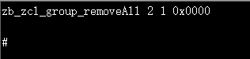
zb_zcl_onoff
- 功能：向目标设备发送on/off控制命令
- 参数：
- 参数1：<uint8_t>类型，选择寻址模式，1=group|2=short
- 参数2：<uint16_t>类型，目标设备短地址
- 参数3：<uint8_t>类型，源设备endpoint
- 参数4：<uint8_t>类型，目标设备endpoint
- 参数5：<uint8_t>类型，开关类型选择，0=off|1=on|2=toggle
示例：
"zb_zcl_onoff <addr_mode> <dst_addr> <src_ep> <dst_ep> <cmd_id>\r\n"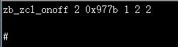
zb_zcl_move_to_level_with_onoff
- 功能：向目标设备发送Move to Level (with On/Off)控制命令
- 参数：
- 参数1：<uint16_t>类型，目标设备短地址
- 参数2：<uint8_t>类型，源设备endpoint
- 参数3：<uint8_t>类型，目标设备endpoint
- 参数4：<uint8_t>类型，Level值
- 参数5：<uint16_t>类型，变化时间(单位:秒)
- 示例：
"zb_zcl_move_to_level_with_onoff <dst_addr> <src_ep> <dst_ep><level> <transition_time>\r\n"
zb_zdp_leave_req
- 功能：请求远端设备离开当前网络
- 参数：
- 参数1：<uint16_t>类型，目标设备短地址
- 参数2：<uint8_t*>类型，目标设备的MAC地址, 例如下图 00007c040042e8b4 代表 0xb4e84200047c0000
- 参数3：< bool >类型，删除子设备
- 参数4：< bool >类型，离开后执行Rejoin
示例：
"zb_zdp_leave_req <dst_addr> <uint8_t array[8]> <removeChildren> <rejoin>\r\n"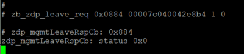
zb_rejoin
- 功能：请求重新加入网络
- 参数：
- 参数1：< bool >类型，0：TC rejoin，1：Secure Rejoin
示例：
"zb_rejoin <bRejoinSecured>\r\n"
OTA使用说明
本文介绍如何对Zigbee设备进行OTA升级，具体包含以下内容：
文中，使用BL706 ZR作为OTA Client，使用BL706 ZC作为OTA Server。
OTA升级流程介绍
Zigbee OTA升级流程如下如所示：
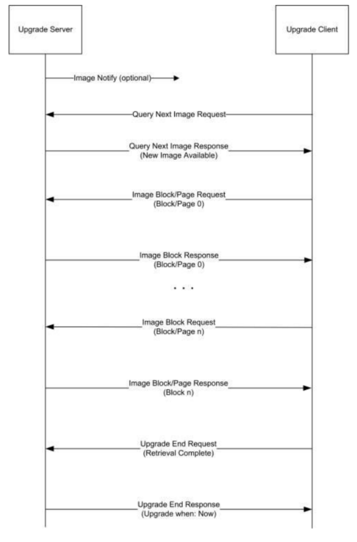
Image Notify: OTA Server发送Image Notify通知OTA Client可以开始OTA升级
Query Next Image Request: OTA Client收到通知后，发送Query Next Image Request询问是否有可用的升级文件。
该请求数据包中携带了OTA Client设备的当前运行的固件信息，包括厂商ID(Manufacture Code), 镜像类型(Image Type)，当前版本号(Current File Version)，以及硬件版本号(Hardware Version，可选字段)。
Query Next Image Response: OTA Server根据Query Next Image Request中的信息查找是否有匹配的升级文件，并通过回复Query Next Image Response告知OTA Client。
- 如果找到匹配的OTA文件，Query Next Image Response中会包含新版固件信息，如新的固件版本号。
- 如果没有找到匹配的文件，则会在该响应数据包中告知Client端没有可用的升级文件(status=NO_IMAGE_AVAILABLE)。
Image Block Request & Image Block Response： OTA Server和OTA Client之间传输OTA文件。
OTA Header部分会首先传输，如果升级过程中发现OTA Client设备在接收了1个或少数几个Image Block Response后，OTA过程便终止了(Client设备发送Upgrad End Request， status=INVALID_IMAGE), 一般是因为收到的OTA Header数据有误或者不符合要求，可以通过以下几点查找原因
- 检查Image Block Response中的数据，是否是OTA文件中的header数据。
- 检查Header中的相关版本信息是否正确。
- 检查Header中文件大小是否超出Client设备的存储空间。
Upgrade End Request: OTA Client发送该请求告知OTA Server升级过程已结束。
在发送该请求之前，OTA Client设备会对收到的OTA文件进行校验(如SHA256 hash, ESCDA签名)，如果校验失败，Upgrade End Request中status字段值为"INVALID IMAGE"，如果校验成功，则status=SUCCESS。
- Upgrade End Response: OTA Server通过回复Upgrade End Reqeust告知OTA Client设备可以切换到新镜像并指定切换时间。
制作OTA升级文件
OTA 文件格式

OTA 文件格式如上图所示，通常OTA文件只需要包含OTA Header和Upgrade Image两部分。
- OTA Header: BL Zigbee设备OTA Header包含以下内容
struct _zclOtaHeader{ uint32_t fileIdentifier; uint16_t headerVersion; uint16_t headerSize; uint16_t headerFieldControl; uint16_t manufacturerID; uint16_t imageType; uint32_t fileVersion; uint16_t zigBeeStackVersion; char headerStr[32]; uint32_t imageSize; uint16_t minHWVersion; uint16_t maxHWVersion; };
- Upgrade Image: Zigbee设备固件
制作BL Zigbee OTA文件时，Upgrade Image使用压缩后的固件(FW_OTA.bin.xz.hash)，该固件可以使用Bouffalo Lab Dev Cube生成。 生成方法和烧写Zigbee设备固件方法一致(但不需要连接BL702/706开发板, 可忽略download失败提示)， 生成好的压缩固件在Dev Cube的安装目录下可以找到(E.g. D:\BouffaloLabDevCube-1.6.2-win32\chipsbl702ota\FW_OTA.bin.xz.hash)。
生成OTA文件
可以使用Bouffalo Lab提供的OTA文件生成工具（ota-image-builder.exe）来生成OTA文件，命令行参数如下：

示例
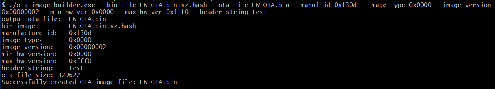
配置OTA Server
这里介绍使用BL706开发板作为OTA Server的使用方法。
烧写OTA文件到MFG分区
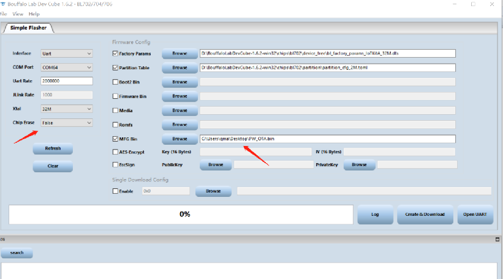- Chip Erase选择False
- Factory Param选择bl_factory_params_IoTKitA_32M.dts
- Partition Table根据flash大小选择partition_cfg_1M.toml或partition_cfg_2M.toml
- Firmware Bin 取消勾选
- MFG Bin选择生成好的OTA文件FW_OTA.bin
- 点击"Create&Download"
加载OTA文件
- 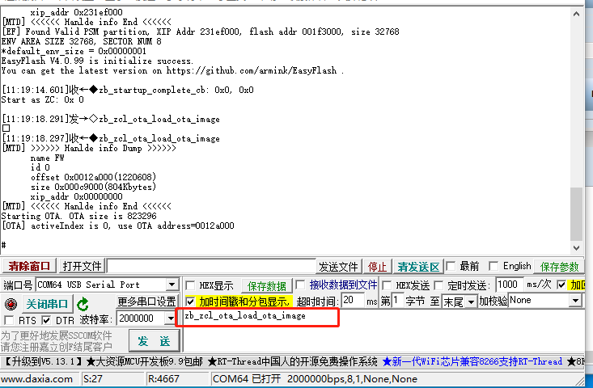
如上图所示，在开发板上输入"zb_zcl_ota_load_ota_image" CLI命令加载OTA文件。
OTA升级过程演示
第一步：生成OTA文件
第二步：配置OTA Server
第三步：发送Image Notify通知Client设备开始升级
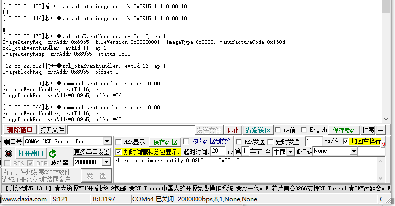OTA Server端输入"zb_zcl_ota_image_notify 0x89b5 1 1 0x00 10" CLI命令来发送Image Notify， 其中0x89b5为OTA Client短地址。
第四步：OTA Client询问OTA Server是否有可升级的OTA文件
- OTA Server端串口会打印收到的Query Next Image Request请求：
ImageQueryReq: srcAddr=0x89b5, fileVersion=0x00000001, imageType=0x0000, manufactureCode=0x130d
- OTA Server端串口会打印OTA文件匹配结果并发送Query Next Image Response，如果没有匹配的ota文件，则status=0x98(NO_IMAGE_AVALIABLE)：
ImageQueryResp: srcAddr=0x89b5, status=0x00
- 第五步：传输OTA文件
- OTA Server端串口会打印收到的Image Block Reqeust

OTA Client端串口会打印OTA升级进度
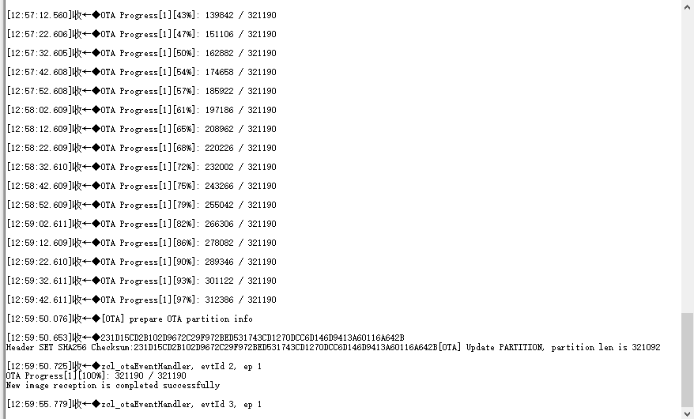
第六步：OTA文件传输完毕后，OTA Client会对OTA文件进行SHA256 hash校验，校验成功会切换到新image
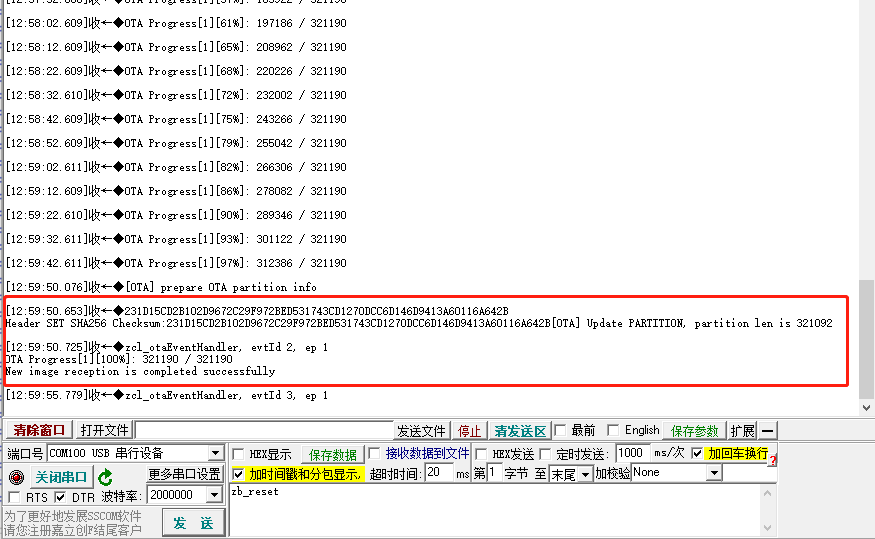